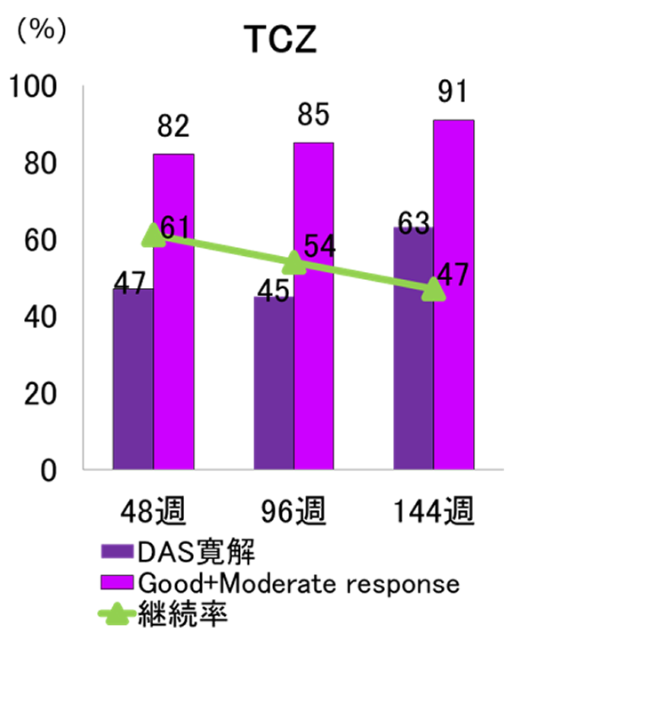
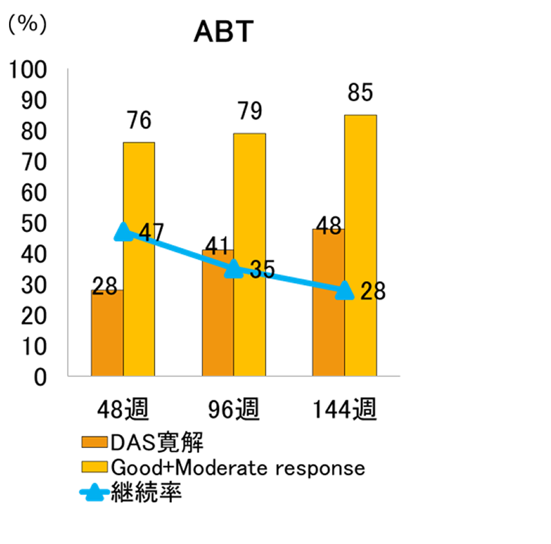

対オレンシア③有効性・安全性
デンマークのレジストリーでアクテムラはオレンシアより効果が高かった（DANBIO Study）
デンマークの大規模RA患者レジストリー
DANBIO(ダンバイオ)：The Danish Rheumatologic Database
デンマークにおける生物学的製剤使用患者の90％以上を網羅する患者レジストリー
人口統計学的データや臨床データ、種々の検査値、QOLデータなどが登録されている
【ベースラインの患者背景】
| TCZ （n=790） |
ABT (n=238) |
|
|---|---|---|
| 年齢（歳） | 58 (47-66) | 55 (47-64) |
| 罹病期間（年） | 4 (1-12) | 4(1-11) |
| TNF治療歴有(%) | 89 | 94 |
| BIO治療歴有（%） | 95 | 99 |
| MTX併用（%） | 53 | 56 |
| MTX用量（mg/週） | 20 (12 -25) | 20 (10-25) |
| DAS28 | 5.1(4.4-5.9) | 5.1(4.4-5.7) |
DANBIOに登録されたTCZ・ABT患者の3年間データを比較
（寛解率・Good+Moderate反応率・継続率）


日常診療において、アクテムラはオレンシアより寛解率・Good+Moderate反応率・継続率全てが高かった